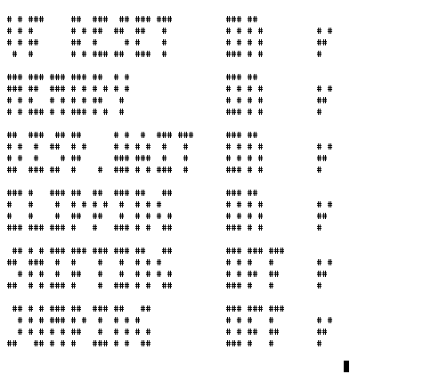

CHIP-8 Interpreter using Curses
This is kind of like a follow up on the CHIP-8 Interpreter for Epson HX-20 that I posted about earlier. To help with development of that implementation I also made an implementation in C using curses that can run in a Linux terminal.
This implementation in C can be compiled with trace support which on exit dumps the last CHIP-8 instructions executed. Just for fun, the code also aims to be ANSI C compatible, so it can be compiled on older platforms.
This interpreter can be downloaded here or from the GitHub or GitLab repositories.
